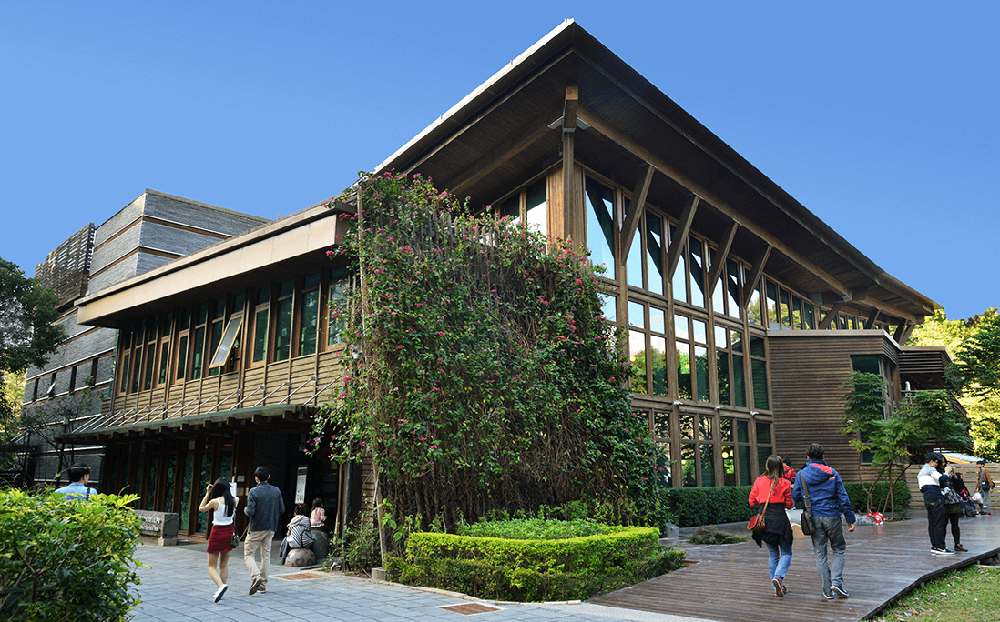

搭乘捷運前往新北投捷運站喔! 攝影阿伯是使用新北敬老卡，所以捷運有半價優惠喔，公車可以免費搭乘，要注意每個月有固定的搭乘次數喔。
一出來新北投捷運站後在右手邊就有新北投火車站的舊址，現在重新搭建後看起來美輪美奐的，可以聽聽導覽員介紹以前的故事!
接著走進北投公園，有一份說不出的輕鬆感，走兩步也可以坐到旁邊休息一下，感覺很舒服

北投圖書館的第一眼印象就是真的很美，在樹林間的圖書館，也是綠建築的圖書館喔! 進去館內的感受也不太相同，好放鬆的氛圍!
北投溫泉博物館閉館修繕公告，本館將於2017.9.4(一)至2018.10.26(五) 全館暫停開放以進行古蹟修繕工程。
好可惜這次沒有看到，找找過去的照片給大家欣賞一下!

梅庭遊客中心：只有簡單的進來走走，日式建築還的還滿漂亮的!
千禧湯戶外露天浴池：，年滿65歲以上的人都可以買優待票喔，優待票價20元，其實來泡的人還不少喔，記得喔!要需穿泳衣泳褲喔！

再往上面走可以到地熱谷散步走一走!
地熱谷走進去大概也是約5分鐘左右，但沿路都是平路，走起來也算是非常輕鬆
今天有散散步，曬曬太陽很舒服，接著就要返回新北投捷運站，我們下次見喔!
喜歡這篇文章，想分享於: